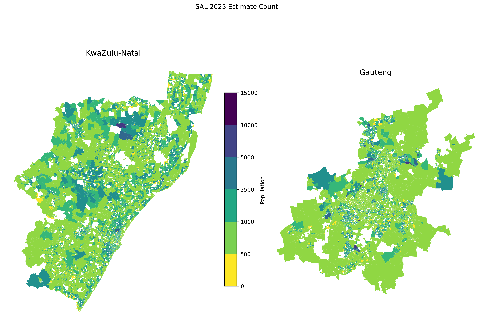
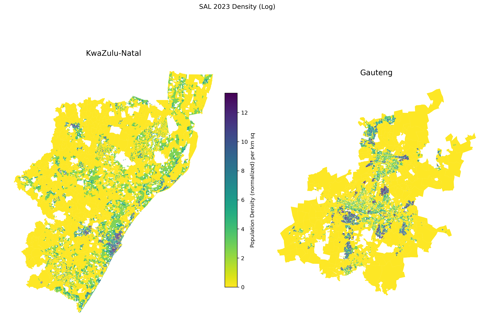

MUSA Smart Cities Practicum | Spring 2026
Team: Tess Anh Thu Vu, Joey Cahill, Jillian Kalman, Alex Stauffer
Instructors: Michael Fichman & Matthew Harris
Client: Distributed AI Research Institute
(DAIR)
Raesetje Sefala (Researcher) | Nyalleng Moorosi (Research Fellow)
The catalyst of this project starts with a new healthcare policy passed by the South African parliament that intends to expand public healthcare services, fixing what is currently an imbalanced system. Right now, public and private medicine funding is split 50/50 by the government. However, the public health system serves over 80% of the population, whereas private pharmacies serve about 20% [CITE]. The inefficiency of this system on the supply and demand of medicines has led to a number of social repercussions like lower than average vaccination rates and higher than average rates of communicable diseases [CITE]. This new bill seeks to bridge the gap between private and public disparities by making public health insurance acceptable in private pharmacies where supply is at a surplus.
The National Health Insurance (NHI) Act of 2024 represents a landmark transformation in South African healthcare policy, establishing a public fund to subsidize the provision of care and medicines across the nation. This legislation aims to address the profound inequalities in healthcare access that persist nearly three decades after the end of apartheid, creating a universal healthcare system that theoretically enables all South Africans to receive quality healthcare services regardless of their socioeconomic status (need citation).
The passage of the NHI Act has prompted critical questions about implementation readiness, particularly regarding the spatial distribution of pharmaceutical services. While the NHI creates funding mechanisms for healthcare provision, its success depends fundamentally on whether populations can physically access healthcare infrastructure, including pharmacies where they can obtain prescribed medications. This spatial dimension of healthcare access is not uniformly distributed across South Africa and reflects historical patterns of development, urbanization, and the enduring legacy of apartheid-era spatial planning.
The precursor of this pharmasocial imbalance is the persisent legacy of Apartheid in South Africa that was officially stripped of use in the 1990s. During this relatively short period of time, political power was consolidated to the white minority settlers who were motivated by racism and hierarchy in how they ran the country. Native Black African populations were stripped of voting rights, land ownership rights, and the ability to hold office. While segregation is no longer written in the South African constitution, the forced restructuring and separation that Apartheid instilled has continued to influence infrastructural development, the movement of people, and ideological beliefs to this day. The activists and authors behind this new healthcare policy are interested in expanding pharmaceutical access to the average South African to improve both individual health outcomes and societal public health outcomes.
With this, understanding healthcare access in contemporary South Africa requires grappling with the historical geography of apartheid. Crucially, the Group Areas Act of 1950 and subsequent legislation systematically segregated residential areas by race, concentrating Black African and Coloured populations in townships and homelands while reserving well-serviced urban areas for white residents. As an intended consequence, this spatial engineering created patterns of uneven development that persist today as former township areas often lack the commercial infrastructure, including pharmacies, that developed in historically white areas (need citation).
The spatial mismatch between where people live and where services are located represents a fundamental challenge for NHI’s smooth implementation. Populations in former township areas and informal settlements may need to travel considerable distances to access pharmacy services that creates barriers which are particularly acute for the elderly, disabled, and those without private transportation. The informal economy possesses a substantial portion of South Africa’s workforce, further compounds and complicates access patterns, as workers may have limited time flexibility for healthcare visits (need citation).
The Distributed AI Research Institute’s (DAIR’s) interest stems from their broader research agenda examining how data-driven technologies can be deployed to understand and address social inequalities rooted in social ethics. The organization has previously conducted influential research on spatial apartheid, developing datasets and analytical frameworks for studying the persistent spatial inequalities in South African settlements (Sefala et al., 2021).
This project builds on DAIR’s established expertise while extending their analytical framework to healthcare infrastructure. By creating a well-documented, replicable methodology for two pilot provinces, the research provides a foundation that DAIR, should they desire, could expand and generalize to evaluate pharmacy access across all nine South African provinces.
The historical significance of South African society is what will be used to inform the analysis and the features chosen for the final product. The problem in its purest form is an inequitable access to essential medicines asserted by unorthodox geospatial design and privatized healthcare. This project measures and quanitfies accessibility to pharmacies to answer the questions:
The following report will detail how access to pharmacies are defined, the methodology behind the metrics, the instruments used to deploy the application, and the data that was collected to illustrate the findings.
Gauteng, South Africa’s smallest province by area but most populous contains approximately 16 million residents representing roughly 26% of the national population. The province encompasses the cities of Johannesburg, Pretoria (Tshwane), and the East Rand (Ekurhuleni), which forms the economic beating heart of South Africa and the broader Southern African region.
The province’s spatial structure reflects its mining and industrial heritage as Johannesburg developed around gold mining operations with segregated residential areas creating the townships of Soweto, Alexandra, and numerous smaller settlements. Pretoria, which was established as an administrative center, displays similar patterns of racial residential segregation. The East Rand industrial corridor connects these major centers while incorporating additional township complexes.
Metropolitan Municipalities in Gauteng:
[Potential geographic photos?]
- City of Johannesburg Metropolitan Municipality
- City of Tshwane Metropolitan Municipality
- City of Ekurhuleni Metropolitan Municipality
District Municipalities in Gauteng:
[Potential geographic photos?]
- Sedibeng District (Emfuleni, Midvaal, Lesedi Local Municipalities)
- West Rand District (Mogale City, Rand West City, Merafong City Local Municipalities)
Gauteng’s economic centrality creates complex healthcare access dynamics because while the province has relatively high pharmacy density overall, the distribution is uneven. Historically white suburbs contain concentrations of commercial pharmacy services, while township areas and informal settlements often have limited pharmacy presence, requiring residents to travel to commercial centers for pharmaceutical services.
KwaZulu-Natal, located on South Africa’s eastern coast has approximately 12 million residents, making it the second most populous province. In juxtaposition to Gauteng, this province displays greater geographic diversity, encompassing coastal urban areas around Durban (eThekwini), extensive rural areas, and former homeland territories that were designated as independent states during apartheid (need citation).
The city of Durban serves as the provincial economic center and contains South Africa’s largest port. However, unlike Gauteng’s concentrated urbanization, KwaZulu-Natal has substantial rural populations, including communities in former KwaZulu homeland areas where they face healthcare access challenges that are distinct from urban townships, including greater distances to healthcare infrastructure and limited transportation options.
Metropolitan Municipality in KwaZulu-Natal:
[Potential geographic photos?]
- eThekwini Metropolitan Municipality
District Municipalities in KwaZulu-Natal:
[Potential geographic photos?]
- Amajuba District - Harry Gwala District
- iLembe District
- King Cetshwayo District
- Ugu District
- uMgungundlovu District
- uMkhanyakude District
- uMzinyathi District
- uThukela District
- Zululand District
The contrast between Gauteng and KwaZulu-Natal provides methodological advantages for this research. By developing approaches that work across both a highly urbanized province and one with significant rural populations, the methodology of measuring access to both of them demonstrates generalized applicability, coupled with human decision-making, to the diverse geographic contexts present across South Africa.
South Africa’s administrative hierarchy structures the geographic analysis. The nine provinces divide into either metropolitan municipalities (for major urban areas) or district municipalities (for other areas). District municipalities further subdivide into local municipalities. For census purposes these administrative units contain wards that serve as the smallest geographic unit for which 2023 Census data are available.
Wards are population-scaled units, meaning that rural wards cover much larger geographic areas than urban wards while containing similar population counts. This creates analytical challenges in that rural wards may encompass multiple dispersed settlements with varying access to pharmacy services, while urban wards represent more spatially concentrated populations.
Below the ward level, Small Area Layers (SALs) provide finer geographic resolution but are only available from the 2011 Census. SALs contain approximately 500 households each, providing a scale more appropriate and granular for local accessibility analysis but requiring methodological approaches to estimate current populations from decade-old data.
[To be filled]
[To be filled]
[To be filled]
[To be filled]
[To be filled]
The project assembles pharmacy location data from multiple sources, reflecting the fragmented nature of pharmacy information in South Africa, and unfortunately, no unified national database of pharmacies exists, requiring data integration across heterogenous sources.
Geographic Boundary Data:
| Dataset | Source | Date | Columns | Records |
|---|---|---|---|---|
| South Africa Wards | South African Census | 2023 | 12 | 4,468 |
| South Africa Small Area Layers (SAL) | South African Census | 2011 | 60 | 39,177 |
Reference Lookup Tables:
| Dataset | Description | Columns | Records |
|---|---|---|---|
CITY_PROVINCE_LOOKUP |
Mapping table linking cities/suburbs to provinces and municipality hierarchies for Gauteng and KwaZulu-Natal | 6 | 290 |
The CITY_PROVINCE_LOOKUP table was created to help with
handling province assignment for pharmacy records lacking explicit
province information, which contains mappings from city/suburb names to
their corresponding PROVINCE, LOCAL_MUNICIPALITY,
DISTRICT_MUNICIPALITY,
METROPOLITAN_MUNICIPALITY, and CITY values.
This lookup supports the multi-stage address matching process described
in the data processing pipeline.
Environmental and Raster Data:
| Dataset | Source | Resolution/Format | Description |
|---|---|---|---|
| Google Open Buildings | Google Research | Vector polygons | Machine-learning-detected building footprints for built environment analysis |
| OSMnx Pedestrian Network | OpenStreetMap via OSMnx | Vector network (nodes/edges) | Walkable street network for pedestrian accessibility calculations |
Private Health Insurance Provider Networks:
Private health insurance providers publish lists of pharmacies in their preferred provider networks. These lists, while not comprehensive of all pharmacies, provide extensive coverage of commercially operating pharmacies:
Total Raw Private Pharmacy Records: 9,114
Government Hospital Data:
| Dataset | Source | Date | Records |
|---|---|---|---|
| Hospital Pharmacies | DAIR Institute (pre-cleaned) | [TBD] | 272 |
Public hospitals contain pharmacies that dispense medications to patients, and location data from government sources confirmed by the DAIR Institute provides coordinates for these public pharmacy access points, though not detailed address information—private pharmacies, on the other hand, lack coordinates, but have detailed address information.
Data Extraction Methods:
| Dataset | Description | Records |
|---|---|---|
PHARMACIES_COMBINED |
Unified pharmacy database for Gauteng and KwaZulu-Natal after cleaning, standardization, and province filtering | 5,436 |
The reduction from 9,114 raw private pharmacy records plus 272 hospital records (9,386 total) to 5,436 combined records reflects the removal of pharmacies outside Gauteng and KwaZulu-Natal provinces, deduplication of pharmacies appearing across multiple insurance networks, and removal of records with insufficient address information for geocoding.
Data Source Limitations:
PRACTICE_NUM identifiers, preventing deduplication for
approximately 1,500 records.Validation Sources:
Data processing occurs within Snowflake, a cloud data platform that serves as the central workspace for assembling, cleaning, and validating pharmacy data. The pipeline follows a structured workflow documented in SQL scripts.
The Snowflake database follows a three-schema architecture separating raw ingestion, intermediate processing, and final production tables:
MUSA_DAIR_DB
├── RAW (source data as ingested)
│ ├── PHARMACIES_GEMS_GAUTENG
│ ├── PHARMACIES_GEMS_KZN
│ ├── PHARMACIES_MOMENTUM_GAUTENG
│ ├── PHARMACIES_MOMENTUM_KZN
│ ├── PHARMACIES_WOOLTRU_GAUTENG
│ ├── PHARMACIES_WOOLTRU_KZN
│ ├── PHARMACIES_SAMWUMED
│ ├── PHARMACIES_VITALITY_WELLNESS
│ ├── PHARMACIES_HOSPITALS
│ ├── SAL_POLYGON_2011
│ └── WARDS_POLYGON_2023
│
├── INTERMEDIATE (cleaned and joined data)
│ ├── PHARMACIES_COMBINED
│ ├── CITY_PROVINCE_LOOKUP
│ └── WARD_JOINED_SAL (to be created)
│
└── MART (final production tables for Mapbox GL)
└── [final cleaned datasets for web application]RAW Schema: Contains source data in its original structure with minimal transformation. Each pharmacy source maintains a separate table preserving the original column schema. Geographic boundary files (SAL polygons from 2011, Ward polygons from 2023) are stored here after initial import.
INTERMEDIATE Schema: Contains cleaned, standardized,
and joined datasets used during analysis. The
PHARMACIES_COMBINED table consolidates all pharmacy sources
with harmonized schema. Lookup tables and spatial join outputs reside
here:
WARD_JOINED_SAL: Areal-weighted intersection of 2023
Wards with 2011 SALs, containing weighted population allocationsMART Schema: Contains final, analysis-ready tables for the Mapbox GL web map application, so tables in this schema are formatted for efficient tile generation and frontend querying.
Stage 1: Source Ingestion
(01_combine_pharmacies.sql)
Raw pharmacy data from each source is ingested into Snowflake and combined into a unified table structure. Each source has distinct column schemas that were harmonized:
PROVINCE, CITY,
SUBURB, ADDRESS, PRACTICE_NAME,
PRACTICE_NUM, PHONEPRACTICE_NAME,
ADDRESS, STREET, AREA,
POSTAL, PHONE, FAX (no
PRACTICE_NUM)PRACTICE_NUM,
PRACTICE_NAME, ADDRESS, CITY,
PHONEPRACTICE_NUM,
PRACTICE_NAME, PHONE, EMAIL,
ADDRESS, SUBURB, CITYPROVINCE,
PRACTICE_TYPE, PRACTICE_NAME,
ADDRESS, SUBURB, CITY,
PHONE (no PRACTICE_NUM)The combination script standardizes naming conventions
(INITCAP formatting), cleans phone numbers (removing
non-numeric characters, standardizing to 10-digit format), and
concatenates address components into complete geocodable addresses.
Stage 1 Limitations: Schema harmonization requires
assumptions about field equivalence (e.g. treating AREA,
SUBURB, and CITY as interchangeable geographic
descriptors), address concatenation order affects geocoding performance
and quality may vary by source, INITCAP formatting may
incorrectly case acronyms or non-English names.
Stage 2: Province Population and Filtering
(03_fill_gaps_pharmacies.sql)
Many source records lack explicit province information, so the
CITY_PROVINCE_LOOKUP table (n = 290) containing known
cities and suburbs within Gauteng and KwaZulu-Natal allows province
inference from address components. The lookup table maps city/suburb
names to their corresponding province and municipality hierarchy (local,
district, or metropolitan municipality) where the script applies
multiple matching strategies:
CITY columnRecords that cannot be matched to either Gauteng or KwaZulu-Natal are
removed from the analysis scope. Province lookup updates
(02_province_lookup_update.sql) address gaps identified
during manual review of dropped records, ensuring that missing suburbs
are added before final filtering.
Stage 2 Limitations: Province inference relies on the completeness of the lookup table, so missing suburb names result in false negatives (legitimate GP/KZN pharmacies incorrectly dropped). However, the script provides an opportunity for manual human checks, confirmation, and potential revision before dropping the observations from the table. The contains-match fallback may produce false positives for short city names appearing as substrings in unrelated addresses, and municipality hierarchy assignment depends on lookup table accuracy, which may not reflect recent boundary changes or naming conventions.
Stage 3: Deduplication
(04_deduplicate_pharmacies.sql)
The same pharmacy may appear across multiple insurance provider
networks with slightly varying information, so conservative
deduplication uses PRACTICE_NUM as the authoritative
identifier where available, aggregating within sources while preserving
the most complete address information.
Records without PRACTICE_NUM (notably Momentum and
Vitality sources) cannot be deduplicated using identifier-based methods
and are retained for post-geocoding spatial deduplication based on
coordinate proximity and fuzzy matching.
Stage 3 Limitations: Identifier-based deduplication assumes
PRACTICE_NUM uniquely identifies a physical location within
their respective pharmaceutical company, not across. However, a single
PRACTICE_NUM may be associated with multiple branch
locations, or different PRACTICE_NUMs may represent the
same pharmacy under different registrations. Records lacking
PRACTICE_NUM (~1,500) remain as potential duplicates until
spatial deduplication, which inflates counts prior to final datasets. In
addition, the longest address filter for selecting the record assumes
address length correlates with geocoding quality.
Stage 4: Hospital Integration
(05_add_hospitals.sql)
Public hospital records from government sources are appended to the
pharmacy database. Hospital records include geographic coordinates but
lack detailed address information, with PRACTICE_TYPE
designated as “Hospital” and FUNDING as “Public” to
distinguish from private pharmacies.
Stage 4 Limitations: Hospital coordinates may represent facility points within the campus and not pharmacy-specific locations within hospital campuses, it is also possible that not all hospitals contain pharmacies and some may only have dispensaries with limited hours or medication availability, and the dataset also may not capture clinic-based pharmacies or community health centers that provide pharmaceutical services.
This approach estimates small-area population counts for 2023
(SAL-level) using a combination of
2011 SAL population data, 2023 ward-level projections, and spatial
weighting.
Using the Step Down Projection Method: It leverages population growth
patterns and land weights to distribute ward-level counts to finer
spatial units.
2011 SAL census shapefile (ea_sal_kzn_gp.shp)
Already filtered to just Gauteng and KZN
| Column | Type | Count | Unique |
|---|---|---|---|
| OBJECTID | int64 | 39177 | 38380 |
| EA_CODE | float64 | 39177 | 38380 |
| SP_CODE | float64 | 39177 | 6791 |
| SP_NAME | object | 39177 | 6517 |
| MP_CODE | float64 | 39177 | 3381 |
| MP_NAME | object | 39177 | 3166 |
| MN_MDB_C | object | 39177 | 61 |
| MN_CODE | float64 | 39177 | 61 |
| MN_NAME | object | 39177 | 61 |
| MN_TYPE | object | 39177 | 2 |
| DC_MDB_C | object | 39177 | 16 |
| DC_MN_C | float64 | 39177 | 16 |
| DC_NAME | object | 39177 | 16 |
| PR_MDB_C | object | 39177 | 2 |
| PR_CODE | float64 | 39177 | 2 |
| PR_NAME | object | 39177 | 2 |
| EA_GTYPE | object | 39177 | 3 |
| ALBERS_ARE | float64 | 39177 | 38380 |
| MD_CODE | float64 | 39177 | 1 |
| MD_NAME | object | 0 | 0 |
| Shape_Leng | float64 | 39177 | 38380 |
| Shape_Area | float64 | 39177 | 38224 |
| SAL_CODE | int64 | 39177 | 32615 |
| EA_TYPE | object | 39177 | 20 |
| 4_class | object | 37887 | 3 |
| EA_area_km | float64 | 39177 | 27147 |
| num_houses | float64 | 39177 | 755 |
| 4_class_2 | object | 37093 | 3 |
| num_build | float64 | 37093 | 732 |
| EA_CODE_1 | float64 | 37093 | 37093 |
| old_EA_TYP | object | 37093 | 10 |
| smallplace | object | 37093 | 32041 |
| url | object | 37093 | 32201 |
| Black Afri | object | 37093 | 1849 |
| White | object | 37093 | 732 |
| Coloured | object | 37093 | 594 |
| Indian or | object | 37093 | 806 |
| Other | object | 37093 | 132 |
| population | object | 37093 | 1922 |
| 0_4 | object | 37093 | 331 |
| 5_9 | object | 37093 | 276 |
| 10_14 | object | 37093 | 269 |
| 15_19 | object | 37093 | 308 |
| 20_24 | object | 37093 | 436 |
| 25_29 | object | 37093 | 448 |
| 30_34 | object | 37093 | 354 |
| 35_39 | object | 37093 | 273 |
| 40_44 | object | 37093 | 205 |
| 45_49 | object | 37093 | 176 |
| 50_54 | object | 37093 | 145 |
| 55_59 | object | 37093 | 120 |
| 60_64 | object | 37093 | 108 |
| 65_69 | object | 37093 | 96 |
| 70_74 | object | 37093 | 106 |
| 75_79 | object | 37093 | 103 |
| 80_84 | object | 37093 | 98 |
| 85+ | object | 37093 | 99 |
| geometry | geometry | 39177 | 38380 |
2023 Ward shapefile and population (SA_Wards2020.dbf and census_ward_2023_with_pop.csv)
Joining with CSV where population data lives and filtering down to Gauteng and KZN.
wards = wards.merge(
wards_with_pop[['WardID', 'Total',]],
on='WardID',
how='left'
)
wards = wards[wards['Province'].isin(['Gauteng', 'KwaZulu-Natal'])].copy()
| Column | Type | Count | Unique |
|---|---|---|---|
| Province | object | 1430 | 2 |
| Municipali | object | 1430 | 53 |
| CAT_B | object | 1430 | 53 |
| WardNo | int64 | 1430 | 135 |
| District | object | 1430 | 16 |
| DistrictCo | object | 1430 | 16 |
| Date | datetime64[ms] | 1430 | 2 |
| WardID | object | 1430 | 1430 |
| WardLabel | object | 1430 | 1430 |
| geometry | geometry | 1430 | 1430 |
| Total | object | 1430 | 1430 |
Using ArcGis:
Tabulate Intersection–> Input Zone: 2011 SAL geometries Input Class:
2023 Ward Geometries
This table identifies the ward(s) that each SAL encompasses, the
percentage of the area of the ward that the SAL takes up, and the
area.
| EA_CODE | WardID |AREA | Percentage|
|—————-|—————-|—————-|———-| | 50310001 | 52103001 | 6967088.20 | 99.99|
| 50310001 |52106004 | 28.807487153359173 |0.0004| | 50310001 | 52106014
| 43.38680092706605 |0.0003|
This is joined back to the SAL layer by EA_CODE –> Summarize Table –> AREA==Maximum
| EA_CODE | WardID | AREA | Province | district |
|---|---|---|---|---|
| 50310001 | 52103001 | 6967088 | province | district |
| 58110038 | 52606020 | 48373210 | province | district |
| 76410132 | 74805033 | 15722398 | province | district |
| 53810017 | 52606020 | 5720 | province | district |
Final output: Sal_with_wards.shp
Moving over to Python Loading in the new shapefile, fixing column titles, filtering select columns for analysis, and cleaning column entries to remove extra characters.
sal_with_ward = gpd.read_file("sal_w_ward_new.shp")
sal_with_ward=sal_with_ward.rename(columns={'census_war': 'WardID'})
sal_wards= sal_with_ward[['WardID', 'EA_CODE', 'sal2011_po', "Total", 'EA_GTYPE', 'EA_TYPE', 'F4_class', 'num_houses', 'AREA',
'Black_Afri', 'White', 'Coloured', 'Indian_or', 'Other', ]]
sal_wards=sal_wards.rename(columns={'sal2011_po': 'sal2011_pop',
'Total':'ward2023_pop',
'F4_class': 'econ_status',
'num_houses': 'houses2011'})
sal_wards['EA_TYPE'] = sal_wards['EA_TYPE'].str.replace(r'_\*$', '', regex=True)
sal_wards['EA_TYPE'] = sal_wards['EA_TYPE'].str.replace(
'Smallholdings', 'Small holdings'
)As indicated by DAIR, South Africa census has a history up
undercounting populations.
There were 2,084 SALs with a null population, so to avoid perpetuating
further underestimation, housing counts (‘houses2011’) were used as a
population proxy then multiplied by three (average house size). If the
SAL had null/0 population and a house count of 0, their final population
remained at 0.
The log of density is used due to outliers and micro-geometries in the
size of 0.0002 Kmsq, creating extreme distortions.
sal_wards.loc[sal_wards['sal2011_pop'] == 0, 'sal2011_pop'] = sal_wards['houses2011']*3
sal_wards['area_km2'] = sal_with_ward.geometry.area / 1e6
sal_wards['sal_dense'] = (
sal_wards['sal2011_pop'].astype(float) /
sal_wards['area_km2'].astype(float)
)
sal_wards['log_density'] = np.log1p(sal_wards['sal_dense'])
We estimate ward-level 2011 counts by grouping at ward-level and summing population counts. This is used to calculate the share of population the SAL contains within the ward ‘share2011’.
ward2011_sum = sal_wards.groupby('WardID', as_index=False)['sal2011_pop'].sum()
ward2011_sum = ward2011_sum.rename(columns={'sal2011_pop': 'ward2011_sum'})
sal_wards = sal_wards.merge(
ward2011_sum,
on='WardID',
how='left'
)
sal_wards['share2011']=sal_wards['sal2011_pop']/sal_wards['ward2011_sum']Duplicates dropped to elimnate double counting
sal_wards = sal_wards.drop_duplicates(subset='EA_CODE', keep='first')Dasymetric mapping weights were implemented to produce SAL unit estimations for 2023: Density multiplied by the population share (share2011)
Multiplying the dasymetric weight by the official 2023 ward counts
sal_wards['dasym_weight']= sal_wards['share2011']*sal_wards['log_density']If the 2023 SAL estimates were properly dissolved into SAL zones, the difference between the 2023 Census ward counts and our SAL estimates should be extremely minimal; as demonstrated below.
wards['ward2023_pop'].sum()-sal_wards['sal2023_est'].sum()Output: 0
Building data is used to further justify that our estimates accurately place population and measure true density. [text]
| sal2023_est | sal2011_pop | growth_rate | dasym_weight | share2011 | log_density | |
|---|---|---|---|---|---|---|
| count | 38,380.000 | 38,380.000 | 37,110.000 | 38,380.000 | 38,380.000 | 38,380.000 |
| mean | 717.127 | 643.432 | -0.004 | 0.037 | 0.037 | 7.408 |
| std | 513.686 | 354.558 | 0.044 | 0.037 | 0.035 | 2.485 |
| min | 0.000 | 0.000 | -0.378 | 0.000 | 0.000 | 0.000 |
| 25% | 351.649 | 451.000 | -0.023 | 0.015 | 0.015 | 6.306 |
| 50% | 664.610 | 623.000 | 0.005 | 0.024 | 0.025 | 8.107 |
| 75% | 992.974 | 809.000 | 0.023 | 0.048 | 0.050 | 9.141 |
| max | 14,387.065 | 11,717.000 | 0.178 | 0.592 | 0.600 | 13.404 |
Head of final output dataset
| WardID | EA_CODE | sal2011_pop | ward2023_pop | EA_GTYPE | EA_TYPE | econ_status | houses2011 | Black_Afri | White | Coloured | Indian_or | Other | area_km2 | sal_dense | log_density | ward2011_sum | share2011 | dasym_weight | sal2023_est | growth_rate | |
|---|---|---|---|---|---|---|---|---|---|---|---|---|---|---|---|---|---|---|---|---|---|
| 0 | 52103007 | 50310272 | 559.000 | 5,886.913 | Traditional | Traditional residential | Non_Wealthy | 131.000 | 558 | 0 | 0 | 1 | 0 | 6.073 | 92.054 | 4.533 | 7,387.000 | 0.076 | 0.067 | 391.863 | -0.029 |
| 1 | 52103007 | 50310271 | 713.000 | 5,886.913 | Traditional | Traditional residential | Non_Wealthy | 167.000 | 713 | 0 | 0 | 0 | 0 | 3.901 | 182.782 | 5.214 | 7,387.000 | 0.097 | 0.098 | 574.856 | -0.018 |
| 2 | 52103007 | 50310262 | 443.000 | 5,886.913 | Traditional | Traditional residential | Non_Wealthy | 135.000 | 443 | 0 | 0 | 0 | 0 | 1.927 | 229.936 | 5.442 | 7,387.000 | 0.060 | 0.063 | 372.815 | -0.014 |
| 3 | 52103007 | 50310266 | 743.000 | 5,886.913 | Traditional | Traditional residential | Non_Wealthy | 154.000 | 740 | 0 | 1 | 1 | 1 | 1.707 | 435.351 | 6.078 | 7,387.000 | 0.101 | 0.119 | 698.395 | -0.005 |
| 4 | 52103006 | 50310265 | 339.000 | 7,902.254 | Traditional | Traditional residential | Non_Wealthy | 92.000 | 339 | 0 | 0 | 0 | 0 | 4.054 | 83.611 | 4.438 | 8,923.000 | 0.038 | 0.034 | 272.536 | -0.018 |
Below is a summarization of growth by land type that was used to create weights. The largest increase came from ‘Informal Residential’ and “Township’ which supports contemporary literature that indicates trends of suburbanization from highly urbanized centers, nn other words: urban sprawl.
| EA_TYPE | pop2011 | pop2023 | growth_rate_2011_2023 | |
|---|---|---|---|---|
| 0 | Collective living quarters | 341,825.000 | 286,717.062 | -1.454 |
| 1 | Commercial | 354,128.000 | 251,390.430 | -2.815 |
| 2 | Farms | 464,324.000 | 239,162.748 | -5.379 |
| 3 | Formal residential | 8,060,534.000 | 7,759,042.311 | -0.317 |
| 4 | Industrial | 206,049.000 | 142,473.030 | -3.028 |
| 5 | Informal residential | 1,849,126.000 | 2,486,815.695 | 2.500 |
| 6 | Parks and recreation | 21,996.000 | 11,008.926 | -5.605 |
| 7 | Small holdings | 281,723.000 | 221,943.536 | -1.968 |
| 8 | Township | 7,677,887.000 | 9,898,540.063 | 2.140 |
| 9 | Traditional residential | 5,162,867.000 | 5,965,887.066 | 1.212 |
| 10 | Vacant | 274,446.000 | 260,348.495 | -0.438 |
Locating the Highest and Lowest Growth Rate
| Max Growth | Min Growth | |
|---|---|---|
| WardID | 74202011 | 52805012 |
| EA_CODE | 76110153 | 58810097 |
| sal2011_pop | 704.0 | 1.0 |
| ward2023_pop | 20019.120349 | 10169.616012 |
| EA_GTYPE | Urban | Traditional |
| EA_TYPE | Formal residential | Vacant |
| econ_status | Wealthy | Non_Residential |
| houses2011 | 339.0 | 15.0 |
| Black_Afri | 466 | 0 |
| White | 123 | 0 |
| Coloured | 22 | 0 |
| Indian_or | 80 | 0 |
| Other | 13 | 0 |
| area_km2 | 3.4439985978511474 | 77.77991507307826 |
| sal_dense | 204.41355592863906 | 0.012856789558852671 |
| log_density | 5.325025293021861 | 0.012774842675117377 |
| ward2011_sum | 3178.0 | 9292.0 |
| share2011 | 0.22152297042164884 | 0.00010761945759793371 |
| dasym_weight | 0.2516713352276131 | 3.2707980640609965e-07 |
| sal2023_est | 5038.23874831511 | 0.0033262760364293313 |
| growth_rate | 0.17821760321211277 | -0.37842072737241883 |
 
Address strings require geocoding to assign geographic coordinates. The project uses a dual-geocoding strategy for cost-efficiency:
Geocoding workflow:
Records that fail geocoding from both sources or receive low-confidence scores require manual review and potential address correction before re-geocoding.
Geocoding Limitations:
Access metrics quantify the relationship between pharmacy locations and population distribution and the project implements multiple accessibility measures to allow for methodological comparison.
Straight-Line Distance: The simplest approach calculates straight-line (Euclidean) distance from population centroids to the nearest pharmacy, providing a baseline measure, but may poorly represent actual travel distances, particularly in areas with transportation barriers.
Network Distance (Driving): Network distance analysis calculates travel distance along the road network, which better represents actual travel requirements, but assumes private vehicle access that may not be available to all populations. Driving network data can be extracted via OSMnx using the “drive” network type.
Network Distance (Walking): Walking network distance provides accessibility measures relevant for populations without vehicle access, and this form of accessibility is particularly relevant for understanding access barriers for lower-income populations. The OSMnx “pedestrian” network type provides calculation of actual walking routes from population centroids to pharmacy locations, accounting for the street network topology rather than assuming straight-line travel.
Catchment Area Methods: Two-step floating catchment area methods calculate accessibility as population-to-pharmacy ratios within defined catchment thresholds, providing a supply-demand perspective rather than purely distance-based measures.
Accessibility Calculation Limitations:
To contextualize pharmacy accessibility within broader environmental and built environment characteristics, the project incorporates datasets measuring greenness and urban development intensity.
Greenness from DAIR:
[To be filled]
Built Environment from Google Open Buildings:
Building footprint density and coverage are derived from Google’s Open Buildings dataset, which provides machine-learning-detected building polygons across Africa derived from high-resolution satellite imagery. This dataset offers more accurate built environment characterization than spectral indices (e.g. NDBI), particularly in heterogeneous urban environments common in South African cities.
Building metrics calculated per ward/SAL include:
Building count
Total building footprint area
Building density (buildings per hectare)
Percent land area covered by buildings
These environmental variables enable analysis of relationships between pharmacy accessibility, vegetation coverage, and urban development intensity, with potential connections to historical apartheid geography where township areas may display distinct environmental signatures.
Environmental Variable Limitations:
Data quality assurance proceeds throughout the pipeline:
Registration Validation: [To be filled]
Spatial Validation: Geocoded coordinates are verified against expected province boundaries where pharmacies geocoding outside Gauteng or KwaZulu-Natal boundaries require manual review.
Duplicate Detection: Post-geocoding spatial analysis
identifies potential duplicates based on coordinate proximity (within
50-100 meters) combined with name similarity, addressing records that
lack PRACTICE_NUM for identifier-based deduplication.
Outlier Review: Accessibility metrics are examined for outliers that may indicate data errors, like pharmacies in incorrect locations, or genuine access deserts requiring policy attention.
Validation Limitations:
The methodology employed in this project involves multiple stages, each introducing potential sources of error that may propagate through the analysis pipeline. Key limitations are summarized below:
| Stage | Primary Limitation | Mitigation Strategy |
|---|---|---|
| Data Collection | Network participation bias, missing independent pharmacies | Cross-validation with Google Places API |
| PDF Extraction | OCR errors in addresses | Manual review of geocoding failures, iterative address cleaning |
| Province Inference | Lookup table incompleteness | Iterative refinement based on dropped record review |
| Deduplication | Missing PRACTICE_NUM for ~1,500 records |
Post-geocoding spatial deduplication, conservative retention |
| Geocoding | Variable coverage, address format inconsistency | Dual-source geocoding, confidence score filtering |
| Areal Weighting | Homogeneous distribution assumption | Sensitivity analysis, comparison with WorldPop estimates |
| Step-Down Model | 11-year temporal gap, stationarity assumption | Multi-method comparison, flagging high-divergence areas |
| Accessibility Calculation | Centroid assumption, threshold arbitrariness | Multiple metric calculation, distance decay functions |
| Environmental Variables | Temporal mismatch, detection accuracy | Confidence filtering, seasonal composite imagery |
Users of this analysis should interpret results as indicative rather than definitive, particularly in areas where multiple limitations may compound. In this regard, policy decisions should be informed by but not solely determined by these accessibility measures, with ground-truthing recommended for priority intervention areas.
[Section to be populated with analysis results including:]
PRACTICE_NUM completeness rates by source[Section to be populated with analysis results including:]
[Section to be populated with analysis results including:]
[Section to be populated with analysis results including:]
[To be filled]
The web application serves a journalistic function, allowing non-technical users to understand healthcare access patterns in the study area. The interface design prioritizes:
Landing/Story Section:
Initial view provides narrative context about the NHI Act, healthcare access challenges, and the significance of pharmacy distribution. Scrollytelling or map dashboard format guides users through key findings before releasing them to free exploration.
Interactive Map:
Central map component enables:
Pharmacy location visualization (private vs. hospital, color-coded)
Population density overlays (toggle between estimation methods)
Accessibility metric choropleth mapping
User location input for personalized accessibility assessment
Layer controls for customizing visible information
Statistics Dashboard:
Side panel displays aggregate statistics:
Total pharmacies in view
Population served within access thresholds
Demographic breakdowns of accessible/inaccessible populations
Comparison metrics across administrative units
Methodology Documentation:
Accessible documentation explaining:
Data sources and collection methods
Population estimation approaches
Accessibility metric calculations
Limitations and caveats
Use Case 1: General Public Information Seeking
A South African citizen wants to understand whether their area has adequate pharmacy access relative to other areas where they can select their ward/municipality to see local accessibility metrics compared to provincial averages.
Use Case 2: Policy Analysis
A government official or NGO analyst wants to identify priority areas for pharmacy infrastructure investment where they can view maps of accessibility gaps, filter by demographic characteristics, and export summary statistics for reporting.
Use Case 3: Research Reference
An academic researcher wants to understand the methodology for potential replication in other contexts where they can access detailed documentation and download source code for adaptation.
This research was conducted as part of the MUSA Smart Cities Practicum at the University of Pennsylvania’s Weitzman School of Design.
Academic Guidance:
Michael Fichman (Instructor)
Matthew Harris (Instructor)
Client Organization:
Distributed AI Research Institute (DAIR)
Raesetje Sefala (Researcher)
Nyalleng Moorosi (Research Fellow)
Institutional Support:
University of Pennsylvania Urban Spatial Analytics Program
Snowflake (sponsored student accounts)
Data Providers:
Statistics South Africa (Census data)
Municipal Demarcation Board (ward boundaries)
GEMS, Momentum, Wooltru, SAMWUMED, Discovery Vitality (pharmacy network listings)
Google (Places API)
Methodological Foundations:
This work builds on the established research of the DAIR team on spatial apartheid in South Africa, as well as the broader scholarly literature on healthcare accessibility, spatial analysis, and environmental justice.
The data processing pipeline is implemented in Snowflake SQL across five primary scripts:
01_combine_pharmacies.sql
Creates the unified PHARMACIES_COMBINED table from eight
source tables. Key operations include:
Schema standardization across varied source formats
Address concatenation from component fields
Phone number cleaning (numeric only, 10-digit standardization)
Practice name normalization (INITCAP
formatting)
Source tracking via COMPANY column
Conservative deduplication using
PRACTICE_NUM
02_province_lookup_update.sql
Updates the PROVINCE_LOOKUP reference table with missing
suburbs identified during processing review. Ensures comprehensive
coverage of Gauteng and KwaZulu-Natal geographic names.
03_fill_gaps_pharmacies.sql
Populates missing PROVINCE values using multi-stage
matching against the lookup table:
Primary match on CITY column
Secondary match on address last segment
Tertiary match on address second-to-last segment
Fallback contains match for city names within addresses
Province standardization and non-GP/KZN record deletion
04_deduplicate_pharmacies.sql
Creates PHARMACIES_DEDUPLICATED with cross-source
deduplication:
Records with PRACTICE_NUM grouped by identifier and
province
Longest address retained for geocoding quality
Source networks aggregated to COMPANIES
column
Records without PRACTICE_NUM preserved for spatial
deduplication
05_add_hospitals.sql
Appends public hospital records from government sources:
Sequential PHARMACY_ID continuation
Province mapping from source PR_NAME
Municipality mapping for metro vs. district areas
PRACTICE_TYPE set to “Hospital”,
FUNDING set to “Public”
Coordinate creation from X/Y fields using
ST_MAKEPOINT()
[To be filled]
[Additional geocoding, analysis, and visualization scripts to be populated]
[To be populated with web application code]
[More to be entered]
Gebru, T., Morgenstern, J., Vecchione, B., Vaughan, J. W., Wallach, H., Daumé III, H., & Crawford, K. (2021). Datasheets for datasets. Communications of the ACM, 64(12), 86-92.
Sefala, R. (2024). The Legacy of Spatial Apartheid Dataset (Version V3) [dataset]. Harvard Dataverse. https://doi.org/10.7910/DVN/JRYYNM
{kind=link}
{kind=link}
{kind=link}